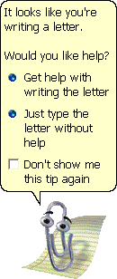

This work is licensed under a
Creative Commons Attribution-ShareAlike 4.0 International License.
...a demo webpage for CMWEB110 Lab 4 consisting of my real childhood experience with software.
In the name of Allah, the Most Gracious, the most Merciful.
I remember having Office 2000 installed on our 98 machines, and I'd browse through the Office Assistant gallery desperately trying to change "Clipit" (aka Clippy) to one of the other cool looking digital assistants. I'd browse through the MS Office clip gallery looking through sound effects, midi audio, pictures, and cliparts, but for a long time, I'd be disappointed because every time I'd try to insert a new clip or audio, or animated GIF, most of the time, I'd have Clippy say "hey, you wanna install this?" I'd click yes, and Clippy would ask me to Insert to Office 2000 CD-ROM in the drive...
I didn't have an Office 2000 CD-ROM. So many cool stuffs were teasing me that I couldn't get...
To my utmost surprise, I noticed my dad carrying the Office 2000 CD out of the blue. I had no idea why he would suddnly have it after all this time; (I'm guessing he probably needed to install something and, thus, borrowed it from his University). But it didn't matter, as my childhood dream was coming true, or so it seemed lat least. My excitement was through the roof, as if I had just received a disc with my favorite game on it, especially since Clippy had been teasing me over the years. Now, I could actually insert the disc, and see what happened!
I did, and...WOW. The Windows 95 startup sound played. It was awesome; now, however, was the moment I've been waiting for, the moment of truth.
I then opened word, right-clicked on Clippy, and proceeded to browse the Office Assistant gallery. I picked my number one choice from the list gallery, "The Dot". It was a red bouncy ball. I clicked OK. Clippy asked if I wanted to install it. I said yes. My heart was pouding, my mind racing. Will this work. After years of desperately waiting and thinking I'd never be able to play with all these goodies staring at me...is today the day it will finally work??
Clippy started the install procedure. So far, it's going as it's supposed to. The installation starts, and as soon as the progress bar would appear, though I'd be prompted for the CD on any other day. But what about now? Will it work? Oh no, what if dad had the wrong CD. Is this even the right disc? I mean it seems like hundreds of features in all these Office apps keep asking for the same CD. How can one CD hold so many things?!
The progress bar started moving.

It's working, I thought to myself. Oh my GOD...IT'S WORKING!!!
My life is complete.
Clippy said its usual goodbyes, riding off in a bicycle. But this time, he didn’t leave going because I quit word. Oh no, no, no. He left so "The Dot" can appear. And boy did I spend the rest of that day being “high” with accomplishment of a longtime childhood wish coming true. I could install any assistant I wanted!! But wait I aminute; this means, I could also insert any clip from the clip gallery. Music, audio, animations, the possibility for my creative pursuit seemed endless right now.
So I did. I popped open the Office clip-arts gallary and started selecting some of my favorite items. It worked; the progress bar appeared, the clipart installed, and successfully inserted itself on the document! So I tried inserting another one, not realizing I was moments away from a the shocker of my life (for a 12 year old at least). But wait....What? NO!
IT CANNOT BE! Say it isn't true!! I must be dreaming… Microsoft Office 2000 has a second disc? A Disc 2?
So I ran back and flipped through the packet of software discs my dad had, the same one that contained the Microsoft Office 2000 CD-ROM. And sure enough, there it was, silver and shiny, reflecting back at me like a treasure chest full of gold. If Disc 1 contained so many stuff...oh my what is in store in a second Office 2000 disc, I thought. More Assistants? New apps??
I hear the Windows 95 chime once again. Office 2000 Disc 2 would usher in a new era of my childhood digital creativity career.
The clip gallery grew exponentially. Hundreds of new animated Gifs, music, sound effects, pictures. Now stickers. And then there was my new favorite Office App (after PowerPoint, of course). I found my childhood creativity app come to life in Disc 2. That app was Microsoft Publisher 2000. It was more than I ever could hope for. Combined with the new assets, I found a creative goldmine. A childhood photoshop and "Adobe stock" for kids of the 90s. This would be my creative workflow for the next two years.
P.S. And then I grew up and used Photoshop.
Here are some references on how to use Microsoft Publisher, PowerPoint, and Adobe Photoshop.
This work is licensed under a
Creative Commons Attribution-ShareAlike 4.0 International License.